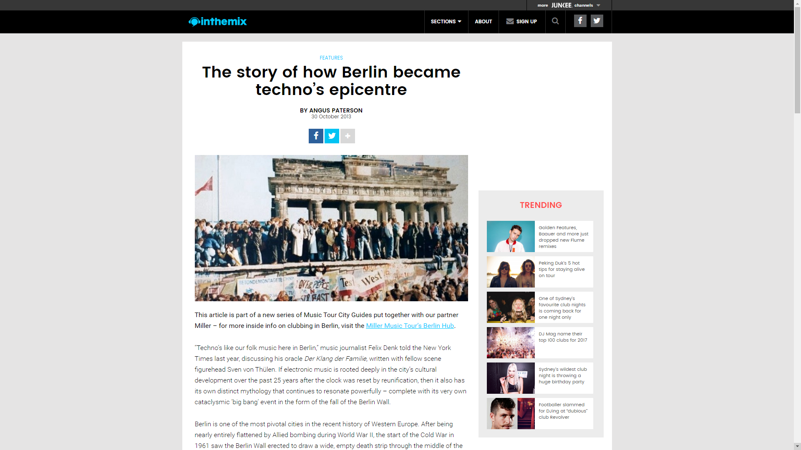
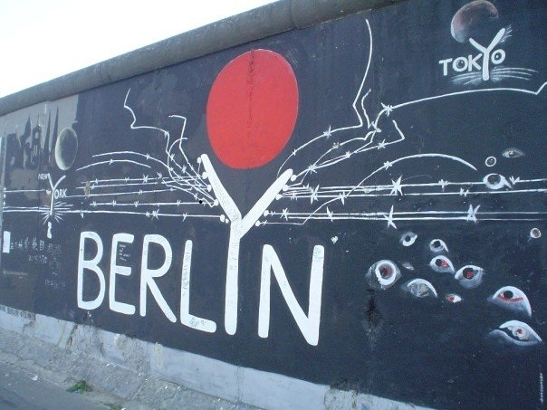
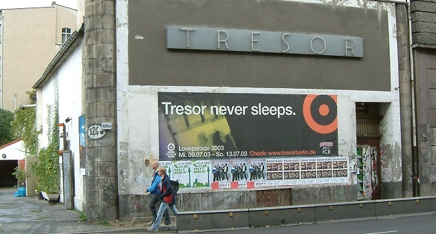
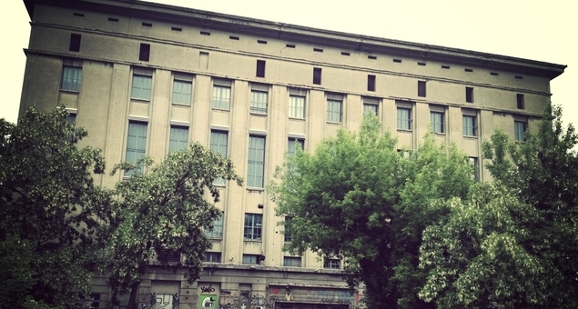

The Story of How Berlin Became Techno’s Epicentre
{kind=link}

“Techno’s like our folk music here in Berlin,” music journalist Felix Denk told the New York Times last year, discussing his oracle Der Klang der Familie, written with fellow scene figurehead Sven von Thülen. If electronic music is rooted deeply in the city’s cultural development over the past 25 years after the clock was reset by reunification, then it also has its own distinct mythology that continues to resonate powerfully – complete with its very own cataclysmic ‘big bang’ event in the form of the fall of the Berlin Wall.
Berlin is one of the most pivotal cities in the recent history of Western Europe. After being nearly entirely flattened by Allied bombing during World War II, the start of the Cold War in 1961 saw the Berlin Wall erected to draw a wide, empty death strip through the middle of the city, transforming it into a physical barrier between Eastern and Western Europe.
At the close of the 20th century, though, Berlin would rise like a phoenix to become one of the world’s most celebrated centres of music, art, culture and creativity – in a sense reclaiming the status it held for fifteen years following World War 1, before Hitler’s rise to power, when Weimar-era Berlin was a flourishing, world-leading centre for arts and sciences.
Germany’s unconventional capital has been transformed in every sense since the Berlin Wall came down in 1989, and not just in how it looks. The ravaged urban landscapes and abandoned buildings that opened up in the city’s East, only to eventually fall to gentrification, have changed dramatically since 1989; but culturally, Berlin is a different city too. The special creative energy that powered the city in the 90s remains to this day, drawing people in from all over the world.
This was the engine that drove the city’s legendary early techno scene, which has since evolved into what’s widely recognised as one of the strongest dance cultures anywhere in the world. An oversupply of cheap living space was a massive contributor to Berlin developing into a mecca for alternative culture, helped along by the fact that more than a third of the buildings in East Berlin lay unoccupied after reunification. The scene’s early days were defined by a creative and entrepreneurial use of that space, with almost all of Berlin’s famous clubs in the 90s taking advantage of derelict buildings with favourable rental terms, as well as a nomadic attitude largely free of long-term planning or economic considerations.
While the fall of the Berlin Wall might have really kicked things into gear – creating a scenario where people genuinely felt they could start again with a clean slate – the groundwork for Berlin’s iconic techno scene was actually being laid in the decade before the collapse of the GDR, and it was happening on both sides of the Wall.

Coming to Berlin
Even before reunification, West Germany’s alternative types that weren’t content to fit neatly within the system were already being drawn to Berlin. Citizens across the country were obliged to complete military service after finishing high school; with the exception being West Berlin, due to the presence of allied forces. Anyone less than keen to do their military time would uproot from their hometown after finishing high school and move to West Berlin. This had an enormous impact on both the city’s energy and its reputation.
Thilo Schneider was aware of that reputation before he arrived in the early 90s. Since 2000 Schneider has worked fulltime in editorial for the Berlin-based Groove Magazine, one of Germany’s leading tomes for electronic music. He’s also worked since the early days with Ostgut GmbH, the company that owns the reigning Berghain nightclub.
“The city drew a lot of people who were unhappy with the country’s conservative elements,” Schneider says. “West Germany at that time was a very strict and moral place. I had always liked the image of West Berlin as a very dark, outsider place. This dark city without any rules.”
The Wall cast a considerable shadow over the city, in terms of both the claustrophobic, suffocating vibe it brought for those who were living in the West, and those in the East unhappy with GDR repression. The fall of the Wall brought feelings of elation, a tangible sense of a fresh start, as well as a population from the East celebrating their newfound freedom.
“There was no other city in Germany where the West and the East came together like that. We had become one nation, though each side had a completely different government. After the Wall came down, you had these people from the East, people who looked so terrible, wearing these terrible clothes with such pale faces; but so hungry for everything the West had to offer.”
Schneider’s initial idea when he arrived in 1993 was to study. Unsurprisingly, techno ended up getting in the way. “Of course in 1993, this whole city was so crazy,” he says. “The nightlife was just so intense, and I really was swept up in it. I worked twice a week in different clubs, at Tresor and Bunker, but I went out five times a week for years. It was a crazy time.”
According to Schneider, the atmosphere of a ‘post-Wall’ city continued well into the 90s. “I found it very open; a very strange energy. We all lived in horrible flats without any toilets, but for really cheap rent. There were people who came from middle class backgrounds but lived a free life in very poor circumstances. And you really did feel that energy. But it was a good energy. It wasn’t a depressed energy, it was an energy of relief and freedom.”
When desolation equals freedom
Tresor and Bunker, two of the clubs that Schneider worked at in the 90s, offer a perfect illustration of the sort of desolate spaces that were being re-appropriated by the techno scene. Public authorities in the East had collapsed along with the GDR, meaning ownership of more than a third of the properties had become unclear. Warehouses, bunkers and factories all stood empty.
“You would not even recognise this city now,” says Schneider. “The West side perhaps, but the East really was looking like it had emerged straight from the Second World War”.
Both Tresor and Bunker were located in the East side district of Mitte. Tresor rose from the ashes of West Berlin’s seminal acid house club UFO, set up in the basement vault of an abandoned Wertheim department store. Bunker, on the other hand, put down its roots in an air-raid shelter, built in 1943 by Nazi Germany to shelter up to 3,000 Reichsbahn train passengers.
One-time Tresor booker Alexandra Droener painted a picture in Der Klang der Familie of the area around their chosen venue, which looked like “landfill…one big wasteland. There was nothing there. Absolutely nothing. Rocks, debris, a fence here and there. Today, you can’t imagine how it was. The buildings were derelict. Plus the odd tower block from the 80s. Like a ghost town. Like after the Second World War. A real zero hour atmosphere.”
The brains behind Tresor had started their search for a UFO replacement during the summer of 1990, the ‘Summer of Squatting’, a brief period when the city’s inhabitants took free advantage of the huge amount of buildings in Berlin’s East that had fallen vacant. While the authorities took control at winter’s onset, the mindset of squatting remained.

“There were plenty of places. Old State buildings, former ministries in Stalinist architecture. We wanted to go inside everywhere,” Tresor’s Johnnie Stieler told Der Klang der Familie. “Everything was caught in this tension between reunification and a new beginning. Nobody knew what was going on…except these Stasi-type notaries who were trading in real estate. They’d all sit around, selling stuff under the table. So they knew exactly what was going on.”
However, in a similar fashion to the equally mythologised birthplace of techno, Detroit, all those empty spaces came to represent freedom and liberation, as opposed to urban decay.
“Here they played Detroit techno, the music from the abandoned city. It fit perfectly, with East and West coming together in the clubs,” Schneider says. “In Frankfurt at the time they played trance, with artists like Sven Vath in his early days, while Hamburg was always the house city, the New York style of house with a lot of diva vocals. In Berlin though, things were rough, tough and hard. It’s not hard to understand why this connection with Detroit existed.”
The squatting days might be largely in the past, but Berlin’s attitude to transforming old spaces lives on, from the monolithic Berghain nightclub, that overtook an old power station in Friedrichshain, to the Stattbad in Wedding, a refurbished indoor swimming pool that plays host to the infamous Boiler Room live streams, and the recently opened Klunkerkranich bar in Neukölln, that’s taken over the rooftop of a neighbourhood shopping arcade.
Berlin’s defining spaces
Tresor was eventually forced to shut down in 2005, later finding a fitting new home in a nearby abandoned heating plant on Köpenicker Straße. However, throughout the 90s and right into the next decade, Tresor on Leipziger Straße was one of the crucial spaces for Berlin techno, drawing Detroit messiahs like Mike Banks, Jeff Mills and Juan Atkins into its sweaty vault, as well as being an early home for artists like Sven Vath, Paul van Dyk, Ellen Allien and more.
“That unconditional surrender to the music, to that wall of sound, that’s what made the difference,” scene photographer Tilman Brembs recounted to Der Klang der Familie. “Before, you’d go to clubs but be more of an observer. At Tresor that just wasn’t possible. You’d come in and you were right in the middle of an inferno. There was a completely different level of intensity.”
Schneider nominates the Bunker as one of the underdogs of the early Berlin scene; and what a space it was. Upping the stakes on Tresor even, the walls were up to two metres thick, with a total of 120 rooms across five floors. The mid 90s brought an end to the fun, but the ‘Reichsbahnbunker’ lived on after being converted into a celebrated art space.
For Schneider, above all else was E-werk, an abandoned electrical substation just a stone’s throw from where the East formerly met the West at Checkpoint Charlie. The club brought techno together with contemporary art; what Schneider describes as a “New York attitude.”
“For me, it’s the most important club of the 90s. At that time it was a huge, huge club with one big dancefloor, and they had this clever gay techno art attitude. Wesbam, Paul van Dyk, Woody were residents there, all these great 90s DJs. The parties lasted from midnight until two in the afternoon, the soundsystem was huge and the atmosphere was really great too.”
Schneider maintains that it’s hard to describe in words the sense of community and atmosphere that existed at the time. “Everything was new, and people were totally excited about this new culture and music. Every weekend you were hearing new music that you had never heard before. Now everything is done to a formula, you’ve heard everything before, and when you go out you won’t be surprised. And you don’t necessarily want to be surprised. But at that time, each weekend there was a new sound.”
With Tresor being the exception, clubs rarely lasted in the one location for long, and Berlin’s early techno scene had its ups and downs. In 1998 it was the Ostgut club, an early venture by the team that would eventually open Berghain, which finally offered a new home for the movement. “And it became really such an underground sensation. I mean, nobody really wanted to talk about it or write about it. It was an unwritten rule; you have to hide it because it’s such a treasure. And it really became like a home to a lot of people of that time…you really felt it was the beginning of something special.”
After several years Ostgut was forced to close to make way for a corporate-sponsored arena, leaving a feeling of hopelessness in its wake for those in the scene. This was placated by a number of one-off parties that stepped up to fill the void. That was, until Berghain threw open its menacing power station doors in 2004.
The beginning of a new era
Things entered a new phase of professionalism in the 00s, mirroring the process of gentrification taking place across the city. The Club Commission opened in 2000, a registered coalition of Berlin clubs and event organisers that nowadays defines itself as “the voice of the Berlin club scene.” But this was only one part of a wider shift.
The old power station that houses Berghain was such a sprawling space that commercial success was nearly inconceivable. Today, though, it’s revered as one of the world’s greatest clubs, with an unforgiving music policy and a notoriously stiff door policy that does little to dampen the enthusiasm of clubbers flying in from all over the world. The similarly iconic Watergate also opened on the River Spree, brining a more polished vibe that’s proven equally popular and enduring – though these were only the start of a countless number of clubs that surfaced in the city over the past decade, many of them equipped with long-term leases.
“Perhaps this was a turning point,” Schneider says of Berghain’s opening, “where the underground became more professional in a way. People who are doing clubs now, they still have a lot of passion about it, but they also know it won’t work without a business plan.”

And so the techno scene put down its roots in Berlin. It might have been sad to lose the intense energy of the 90s, but in its place the city now boasts one of the most mature and entrenched clubbing scenes in the world. In the 90s, it was rare to see a club survive for more than a year. In 2013, both Berghain and Watergate are going strong after 10 years.
One of the factors that choked the energy out of the techno scene in the late 90s was its exposure to the mainstream; the famed Love Parade parties drew crowds of more than a million from the Unter Den Linden to the Brandenburg Gate. Eventually, though, Berlin’s electronic scene found its niche back in the underground, where it remains.
“If you look at DJs like Richie Hawtin or Loco Dice, when you see what they earn a month, travelling the entire summer with their private jet…it is not underground at all,” Schneider says. “But the media is not so interested. After the crash of the Love Parade, it was really the end of the public recognition for electronic music as a youth culture. Sometimes I still read in newspapers, ‘oh, who’s interested in techno anymore?’ But I mean, come on… It’s not a new thing anymore, it’s been around for 25 years and it’s mature now. I think the scene is still very alive, and very creative, but the mainstream media is not taking notice anymore.”
The dawn of the ‘Easyjet-raver’
The other defining change of the 00s was Berlin’s new status as an international hotspot. A whole new generation of ravers from all over Europe and the rest of the world now call Berlin home, as well as a steady flow of tourists. What was the catalyst for this change? The establishment of the European Union saw movement between the continent’s borders like never before, but there was one other contributing factor: budget airlines. The term ‘Easyjet-raver’ entered the vernacular in the middle of the last decade.
Berlin electronic music tome De:Bug Magazine published a story on the phenomenon in 2007, where they anonymously interviewed a long-time doorman of several large Berlin techno clubs. “About two and a half years ago, I realised something was changing,” the doorman said. “At first I thought it was just my perception…but then it was clear that there is indeed a new visitor structure, as previously you would never have heard so many different languages at the door… Berlin might well be regarded today as the ‘Ibiza of the North’.”
But while the influx of fans from around the world might be diluting the original techno scene, in other senses it’s keeping the fires lit. “All these tourists and others coming here and searching for the ‘spirit of Berlin’… They’re actually keeping this spirit alive. I really don’t want to go back to that era in the 90s when you’d see the same people every weekend. Of course that was good, but I don’t regret that things have changed and moved on,” Schneider says.
Ultimately, for lovers of electronic music there are still many reasons to enjoy a weekend in Berlin, or otherwise put down roots and stay for good. It’s still an unconventional capital where money isn’t the major concern, and the movement is still strong.
“We set the stone for the whole development of this at the Love Parade in the 90s,” says Schneider. “We always said, this city is poor, but we like to party. And now we have the result. Sometimes it’s tough to get used to, because you can feel like a stranger inside your own city. But once you’re inside a club, and you have a good door policy with a nice crowd, it’s okay.”
Even before the Wall came down in 1989, Berlin was attracting a certain kind of person; those looking for a different kind of life. And this hasn’t changed.
“They’re not average tourists who come to this city; they’re interesting people from all over the world. Artists, musicians… They have the right attitude, and I like that.”